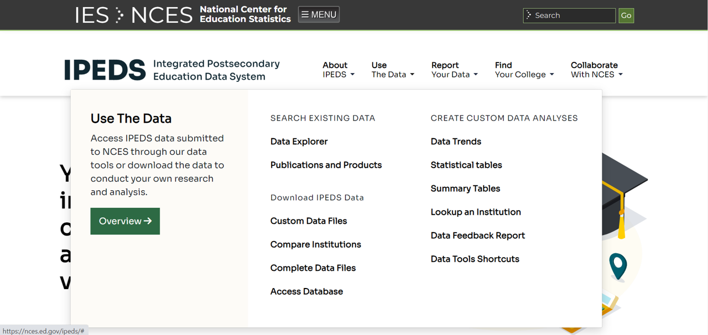
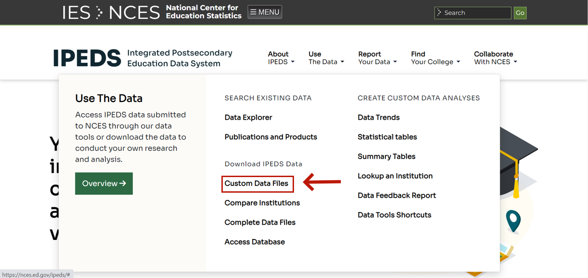

Steps
- To download IPEDS, we first need to open the IPEDS website.

- IPEDS website provides multiple options for us to explore. To download data we need, we need to go to “Survey Data†and choose “Custom data files”.

- To customize the data files, choose groups of institutions.
You can make your choice based on your needs. I will take public, four-year institutions as an example, click “By Groups”, then choose “Sector†-> “Public, 4-year or above”. Then, click “Search†-> “CONTINUE†to step 2.

- Choose years and variables we want.
I will choose 2018- 2021 with variables: “percent admitted -total”, “Percent of full-time first-time undergraduates awarded Pell grants”, and “Graduation rate, total cohort”.
🌻 Congratulations! Now you can download your data files!
- Download the data files.
To have the data files that are easy to manipulate and import to R, choose “csv”.
If you can download files as a whole, you might want do that instead of download a single file.

With those data files, we need to extract them before importing them into R.